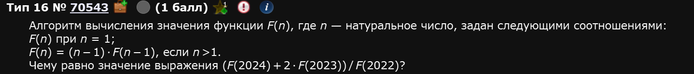
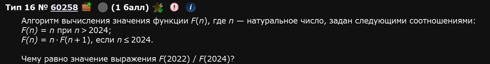
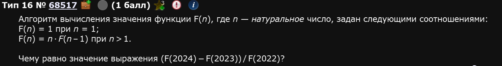
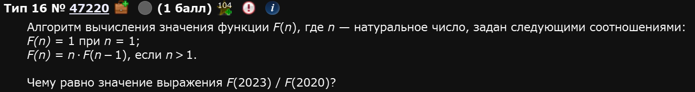
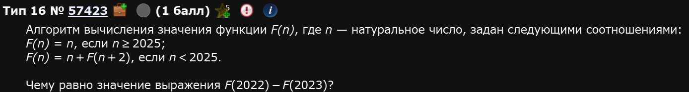
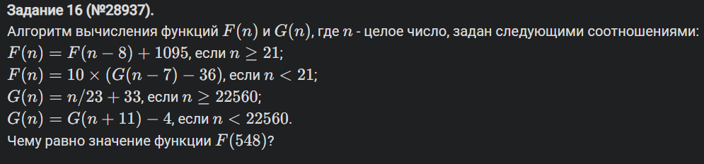
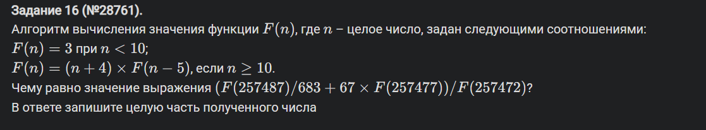

Из-за того, что это задание на рекурсивные вычисление, оно может (и вот тут я говорю без всякой иронии и шуток) заставить комп очень надолго задуматься, сожрать почти 100% оперативы и даже вырубить его. Крайне аккуратно подходите к задачам и их формулировкам. Одна лишняя скобочка может, в лучшем случае, отнять у вас минут 5 времени, а вы ничего не сможете с этим поделать.
Подколка от ФИПИ
Собственно, как и во многих других номерах в 2026 году это задание не поменялось по сути, но стало сложнее из-за больших чисел. Рекурсия теперь тупо неэффективна в этом случае. Один из вариантов решения этой проблемы - кэширование через lrucache. Видимо, экзаменаторы вспомнили свой прайм до 2020 года, как они выдвигали требования к задачам на эффективность и прочее и теперь отыгрываются.
Пример 1)

Итак, тут долго думать не надо, все уже написано за нас. Определяем такую функцию, которая будет выдавать 1, когда n = 1 и (n - 1) * F(n - 1) когда n > 1:
def f(n): if n == 1: return 1 elif n > 1: return (n-1) * f(n-1)
Обратите внимание: действуем мы именно через return, что у самой функции по итогу было значение.
Ну а потом просим питон напечатать то, что задано в условии:
print((f(2024) + 2*f(2023)) // f(2022))
Тут надо быть МЕГА внимательными. Порядок выполнения действий, если он не такой, как в задании, может быть смертельным для вашего компьютера. Например, если бы я забыл одну скобочку, то вывод выглядел бы так:
print(f(2024) + 2*f(2023) // f(2022))
И порядок действий был бы уже другой.
В первом случае:
Умножение: 2 * f(2023)
Деление: (2 * f(2023)) // f(2022)
Сложение: f(2024) + ((2 * f(2023)) // f(2022))
Во втором случае:
Умножение: 2 * f(2023)
Сложение: f(2024) + (2 * f(2023))
Деление: (f(2024) + 2 * f(2023)) // f(2022)
Что приводит к долгим вычислениям и не правильному ответу.
Объединим код:
Однако, если мы попытаемся запустить такой код, питон выдаст нам ошибку:
RecursionError: maximum recursion depth exceeded
Это значит, что питон устал прогонять наши рекурсии и ему нужно расширить лимит операций и памяти для этого. Чтобы это сделать нам нужно обратиться к библиотеке sys и воспользоваться командой setrecursionlimit(), которая и отвечает за формирования предела или глубины рекурсий. Ставим значение на глаз, если снова выдаст ошибку - берем больше. Здесь методом тыка подходит 106.
Вот такой код выдаст нам ответ.
Ответ: 4094550.
Пример 2)

В этом задании, слава составителям, негде нагружать комп, а само решение едва ли отличается от предыдущего. Теперь не нужно даже обращаться к библиотеке sys, код и так заработает:
Почему один код работает без sys, а другой нет - это дело технической составляющей пайтона в частности и компьютера в целом. Т.е. нас это волновать не особо должно, нас должно волновать как получить правильный ответ.
Ответ: 4090506.
Пример 3)

Ответ: 4 092 529.
Пример 4)

Ответ: 8266912626.
Пример 5)

Пример 6)

Вот и кончилась лафа. Здесь у нас две проблемы:
Большие числа, глубина рекурсии будет большой, какой бы sys.setrecursionlimit мы ни ставили
Две функции одновременно
Первое решается очень просто - кэшированием.
Кэширование
Кэширование — это когда Python запоминает уже посчитанные значения функции.
Вот эта строка:
@lru_cache(None)
говорит:
если функцию уже вызывали с таким n, не считай заново, просто верни готовый ответ из памяти.
Например, если один раз посчитали:
G(22549)
то при следующем вызове:
G(22549)
Python уже не будет снова идти по рекурсии, а сразу достанет ответ.
В твоём коде это нужно особенно для G(n):
def G(n): if n >= 22560: return n // 23 + 33 if n < 22560: return G(n + 11) - 4
G(n) идёт вверх:
G(1) → G(12) → G(23) → ... → G(22560+)
Без кэша каждый вызов G(...) заново проходил бы длинную цепочку.
А ты заранее делаешь:
for n in range(22560, 0, -1): G(n)
То есть заранее прогреваешь кэш: просишь Python посчитать много значений G(n) и запомнить их.
Потом, когда вызывается:
print(F(548))
внутри F рано или поздно будет:
G(n - 7)
И G(...) уже не будет долго считаться — значение почти наверняка уже лежит в кэше.
Коротко:
lru_cache нужен, чтобы не считать одну и ту же рекурсию много раз.
А цикл:
for n in range(22560, 0, -1): G(n)
нужен, чтобы заранее заполнить кэш значениями G.
Итог: код работает быстро и не умирает от длинной рекурсии.
А что касается второй проблемы, то принципиально ничего не меняется. Просто пишем эту вторую функцию и все тут. По итогу:
Пример 7)

Здесь ни кэширование (которое None) ни рекурсия не помогут, числа слишком большие. Чтобы понять в чем проблема, давайте вернемся к одному из примеров выше, на маленькие числа и детально проследим как питон считает подобные задачи. Возьмем вот этот код:
Когда запускается программа первое, что делает питон - это print(F(2022) - F(2023)). Он понимает, что вызывается функция, знает, что это за функция, но не знает ее значений. Соответственно, идет их считать именно с чисел 2022 и 2023.
Далее, он смотрит на функцию и попадает в условие if n < 2025:. А там снова функции, но уже n + F(n + 2).
Теперь он считает эту же функцию, но от чисел 2024 и 2025.
И так далее, пока он не воткнется обоими числами в первое условие if n >= 2025: и не поймет, что ему известны оба значения функции без вызова ее же еще раз.
Вывод: эти задачи питон считает С КОНЦА. И каждое его действие “вызов функции в функции” т.е. пункты 2-4 - это либо нагрузка на процессор, если речь про рекурсию, либо на оперативку, если речь про lrucache.
Теперь в чем проблема:
От числа 257487 до ближайшей известной функции т.е. до n = 10 питону надо шагать с шагом 551496 раз. Это вот столько раз ему придется вызвать функцию в функции. Это огромная глубина рекурсии. И именно столько раз ему придется кэшировать значения, если решать кэшем “в лоб”.
Спойлер решения проблемы
Дать питону опорные значения, от которых можно оттолкнуться вблизи начала его расчетов.
Поэтому, мы воспользуемся темной магией: переформулируем задачу.
Т.е. функции повязаны друг на друге и если происходит деление на одну из них, то они сокращаются. Т.е. вот в этом выражении:
F(257472)683F(257487)+67∗F(257477)
Знаменатель вообще можно не считать, он все равно сократиться. А вверху останутся вполне адекватные значения функции. Таким образом, мы только что переписали задачу до вот такого вида:
F(257487)/F(257472)/683+67∗F(257477)/F(257472)
Поэтому вместо того, чтобы считать знаменатель мы скажем: F(257472) / F(257472) = 1. Т.е. зададим питону известное значение, от которого можно оттолкнутся.
Если есть желание закэшировать эту задачу - это можно, но кэшировать, по вышесказанному, нужно НЕ все значения. Например, можно сделать так: